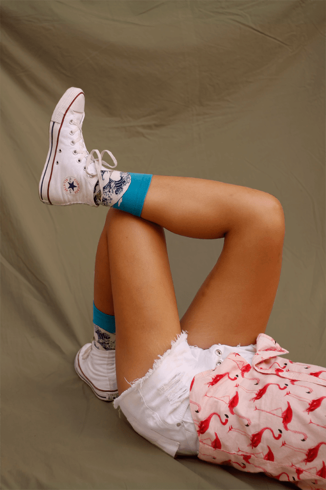

Understanding business segments is a key step in my working process. It's about going beyond the project scope, for the context. If the answers don't exist, we can build them together.


Me, design translator and professional questioner ✢
Design is a framework to process information and transform it into solutions, actions. From my last three years working as a product designer, I sustain the conclusion that my job is to serve as the connection between this processing and people, translate the design to the world.
I trust in my translating process to guarantee collaboration and alignment, in four practices
More about the roots of these practices in my three design principles, down on this page.
And, to ensure the best translation I need a holistic view of the business scenario
Therefore, I ask - hows, whys, whos and how many, I will ask until the doubts are over and, more than that, the guesses.
Working makes me happy. Should I worry?
My career makes me feel grateful. I appreciate being a design-to-world mediator to work with extraordinary people understanding, grinding and solving problems together.
Ok, ok, let’s talk about me
I am a Brasilian designer graduated at UFRJ, I'm 24 years old and started my user experience studies 4 years ago. I found in UX my passion in the design field, and today I'm grateful to work in digital products, from the conception to the real-world use. To do so, I have three principles which I resort to manage myself:
01. Creating together by asking
02. Start by making
The best way to start anything is to do it. Framing problems and putting things on paper: the path is the result, iterated and shaped by many hands. There will not be a creativity flashlight - the possibilities need to be discovered with a lot of work
03. Listening for real collaboration
Real collaboration results from good ears. It doesn't matter what fraction of the job we are talking about, listen to what other people have to say, their opinions and suggestions are valuable until the opposite is proved.